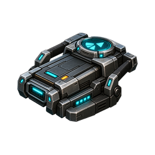
Stellar Syndicates · R10–R14 · 22 October 2026
Season art collection
20 native masters. Eight captain tools, six map glyphs, five Gate stages,
two pirate warships, and three story moments.
Captain gear
Transparency preview
Field tools pair with their gold-and-violet Relic counterparts. The 64 px examples use the game derivatives.

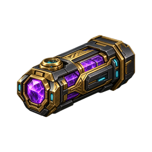

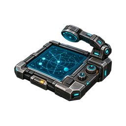

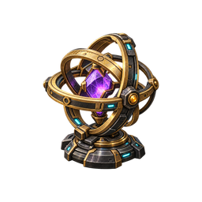

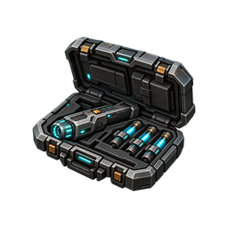

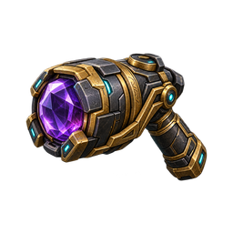

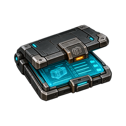

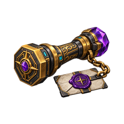

The Gate
One design · five construction states
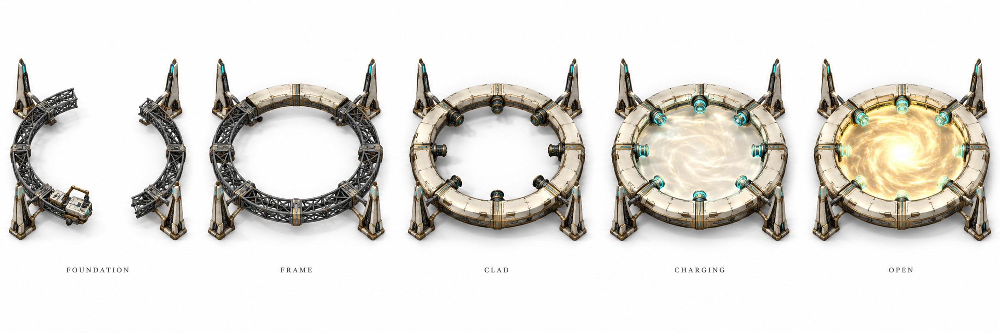

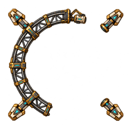

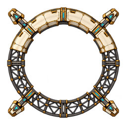

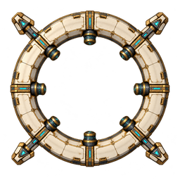

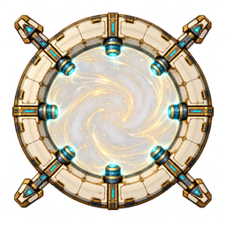

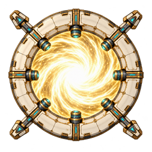

Map glyphs · sheet 5
16 / 32 / 64 px previews
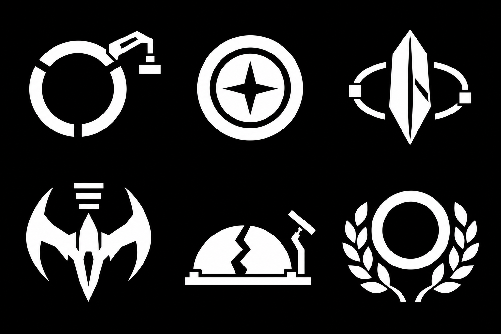

gate construction
gate open
pirate assault
season emblem
Pirate warships of the line
Transparent derivatives · chroma masters retained
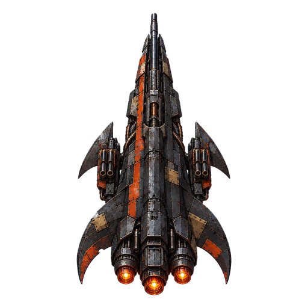


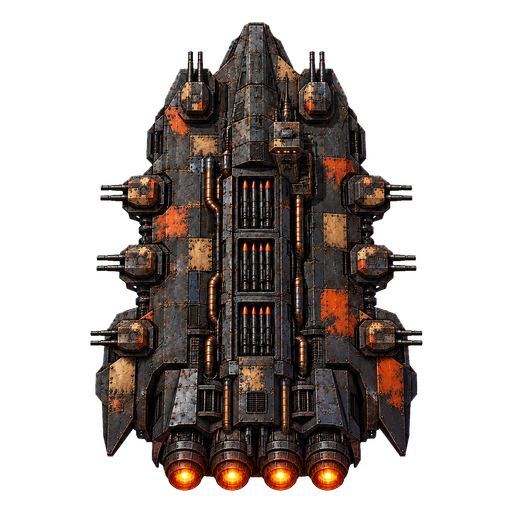


Story moments
1672 × 941 native frames